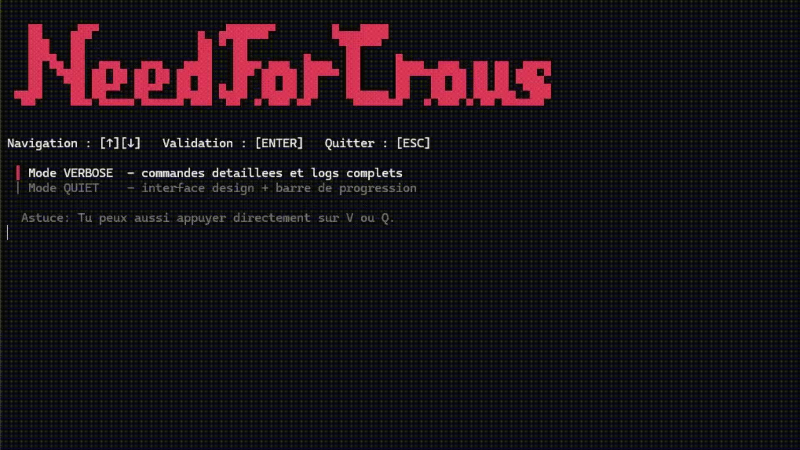

Alertes quasi instantanees
Surveillance continue des annonces CROUS pour etre notifie des qu'un logement apparait.
Objectif : repondre vite, avant la majorite des candidats.
BOT CROUS AUTOMATIQUE
Need For Crous detecte en temps reel les nouveaux logements et vous alerte sur Telegram.
Need For Crous Alerts
vu il y a 1 min
Salut 👋 tu peux surveiller Toulouse et Lyon ?
C’est activé. Je vais t’envoyer une alerte dès qu’un logement apparaît.
🚨 2 Logements DISPONIBLES (sur 4 trouvés) :
⭐ Residence J.P. Sartre (418.4€)
✅ Disponible immédiatement
⭐ LE VELUM (393.46€)
✅ Libre cette semaine
🏠 Residence Pierrette Grimaldi (197€)
A partir du 01/09/2026
🏠 Studio Jules Ferry (320€)
Lien de recherche
Incroyable merci 🙏 continue comme ça
Avec plaisir. Je continue la surveillance en temps réel.
POURQUOI CE BOT
Quand une offre sort, chaque minute compte. Need For Crous est pense pour vous faire gagner du temps, simplifier le lancement et rester fiable dans la duree.
Surveillance continue des annonces CROUS pour etre notifie des qu'un logement apparait.
Objectif : repondre vite, avant la majorite des candidats.
Un executable Windows pret a lancer, sans setup technique lourd ni prerequis complexes.
Double-clic, configuration guidee, bot actif en quelques minutes.
Code transparent sous licence MIT, modifiable et auditable par toute la communaute.
Vous savez exactement ce que fait le bot et comment il le fait.
Compatible Docker et optimise pour rester operationnel avec une gestion moderne du navigateur.
Moins d'interruptions, plus de surveillance continue.
PARCOURS RAPIDE
Recuperez la derniere version depuis GitHub (ZIP ou clone) puis ouvrez le dossier.
Executez build_exe.bat et suivez le wizard (mode, choix .env ou .env.template).
Lancez dist/NeedForCrous.exe, puis envoyez /start sur Telegram.

Installez Need For Crous et activez vos alertes maintenant.